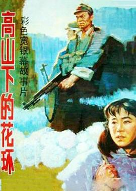

高山下的花环
又名：卫国军魂(港) / Wreaths at the Foot of the Mountain
谢晋的又一力作。对于战争场面，本片刻画得相当精彩，在大的军事行动上摄影十分娴熟，但是在细致的某一战斗中，演绎得有些生硬。却也说明了战争并不是本片需要讲述的重点。有句话是这么说的，悲伤并不是猛然的大雨倾盆，而是雨后渐碎的漉漉潮湿。《高山》与《雁南飞》类似，着重刻画了战争前与战争之后的事情，《高山》则更进一步地扩大了“实事求是”的影响，真好。
作品信息
| 导演 | 谢晋 |
| 编剧 | 李存葆 / 李凖 |
| 主演 | 吕晓禾 / 唐国强 / 何伟 / 童超 / 盖克 / 王玉梅 / 刘燕生 / 斯琴高娃 / 倪大红 / 何毅 / 石磊 / 贾雨岚 / 李丹军 / 管宗祥 / 李振平 / 胡宗琪 / 洪军 |
| 类型 | 剧情 / 战争 |
| 制片国家/地区 | 中国大陆 |
| 语言 | 汉语普通话 |
| 上映日期 | 1984(中国大陆) / 1985-11-07(中国香港) |
| 片长 | 146分钟 |
| IMDb | tt0090340 |
说过什么
2024-02-13 16:29:25
广播 · 看过 · ★★★★★
谢晋的又一力作。对于战争场面，本片刻画得相当精彩，在大的军事行动上摄影十分娴熟，但是在细致的某一战斗中，演绎得有些生硬。却也说明了战争并不是本片需要讲述的重点。有句话是这么说的，悲伤并不是猛然的大雨倾盆，而是雨后渐碎的漉漉潮湿。《高山》与《雁南飞》类似，着重刻画了战争前与战争之后的事情，《高山》则更进一步地扩大了“实事求是”的影响，真好。
最后一次看到是 2026-10-07T23:13:48+08:00 · 豆瓣原页